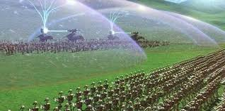
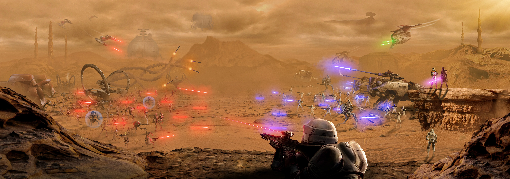

There are several events within the star wars timeline and on this page we will go through them all in cronological order
The units we will use are BBY=before battle of Yavin and ABY=after battle of Yavin
the battle of Naboo 32 BBY

The battle of Naboo is the center of the phantom menace in this battle Naboo was being occupied by the trade federation
In a desperate attempt to save ger home Queen Padme Amidala turns toward the galactic republic for help.
After being denied she turns to the other society on Naboo
The Gungans. The Gungans are a species native to the sea of Naboo after political descussions the Gungans agree to help the Naboo
as the naboo attacked the capital to take the trade federation leaders hostage
the Gungans divert the droids to the feilds of Naboo where the deadlist battle in this event takes place
As the AAt tanks fire shots at the Gungan sheilds they march their droids towards the front lines of the gungans
Even though the droids have longer range they are unable to utilize it because of the sheilds
which force the droids to move within meters of the gungans who are equpped with smaller handheld shields.
After several hours of fighting the gungans surrender to the droids
During the battle in the feilds of Naboo Several Noobian pilot hostages were freed by Queen Amidala and her squad
those pilots would hop into their ships and fly off to fight the droid star fighters and destroy the trade federations blockade
During the starship battle little Anakin skywalker flies into the and blows up the whole ship causing all ground units
to shut down all the droids. While all that is happening Obi-wan Kenobi and his master Qui-gon jinn encounter Darth Maul
After Obi-wan and Qui-gon get seperated by sheild genertors, Qui-gon is locked in a deulwith Maul. Several minutes go by and
Obi-wan is still trapped forced to watch his master as Maul stuns Qui-gon and stabs him through his intestines. Just then
the shield opens and Obi-wan engages Darth Maul. Maul knocks Obi-wan down into a deep pit but Obi-wan catches himself on a light and jumps up
uses the force to grab Qui-gons light saber flips over Mauls head and cuts him in half.
the battle of genosis 22 BBY

the Battle of genosis began when Padme Amidala, Anakin skywalker, and Obi-wan got captured and thrown into an arena
where they have to fight three dangerous creatures to survive. After they defeated all the creatures Mace windu a jedi master
confronts the sith Count Dooku and all the jedi reveal themselves to be in the crowd and they all jump into the pit as thousands
of battle droids flood into the arena all the droids begin shooting at all the jedi and the jedi are cutting through the droids.
then out of the sky republic gunships land dropping off clone troopers the droids quickly lose the small confrontation and jedi and
clone troopers pile into gunships and fly off towards the massive sepratist star ships. The ships land and all the clones and jedi
flood onto the rocky terrain of genosis as dust from the landing gunships fly into the air both sides droids and clone troopers begin
firing blindly into the dust. as the dust begins to clear sepratist tanks fire armour pericing rounds destroying everything the hit.
In return the republic clone AT-TE tanks return heavy artillry fire and destroy several droids. In this battle the droids used several
characters
plot
about
the creator
popular quotes